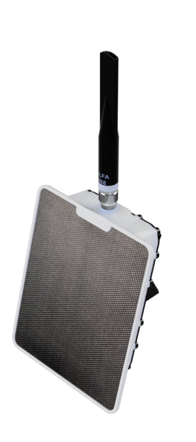
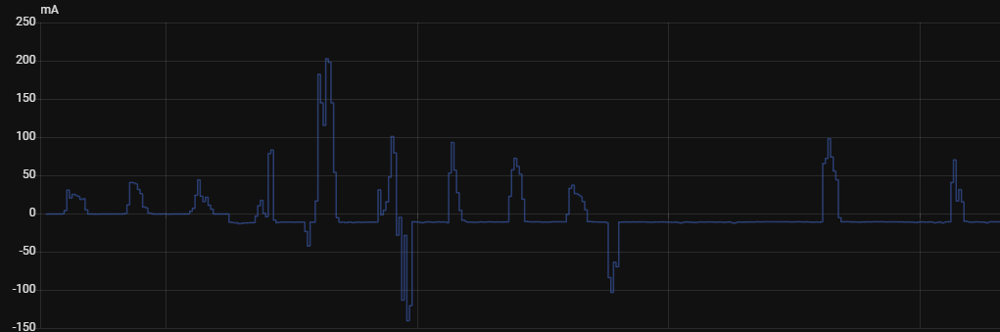
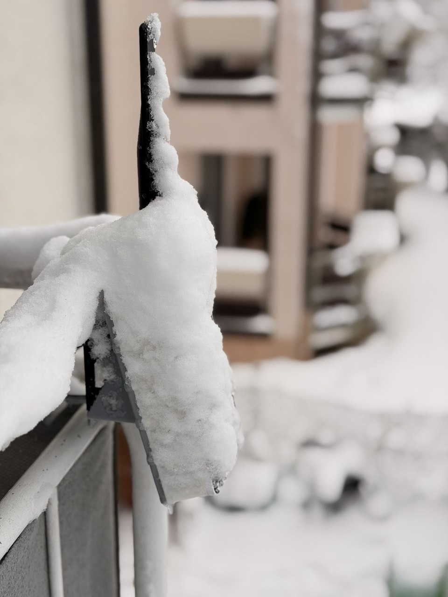
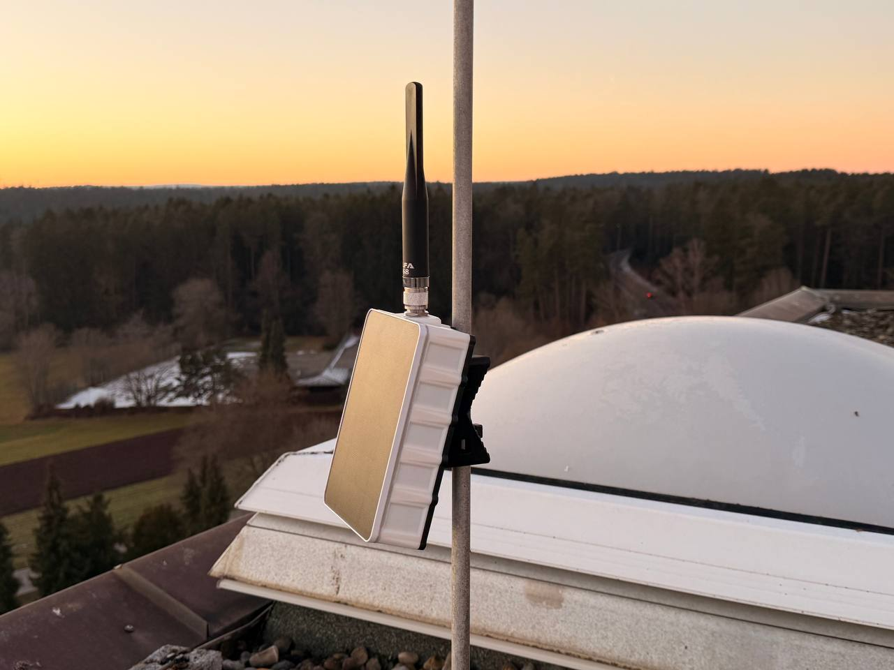
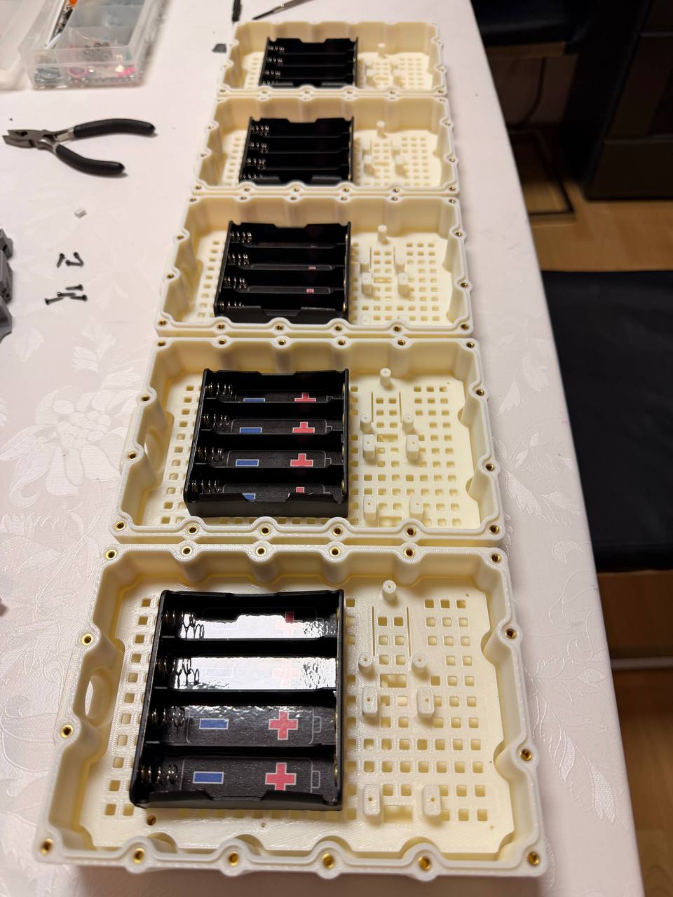
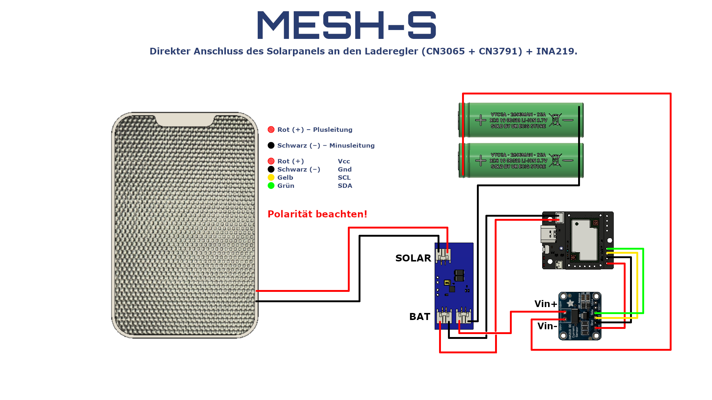
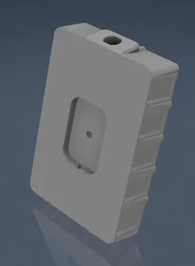

Энергобаланс под контролем
Solar + Li-Ion + MPPT логика, чтобы узел переживал плохую погоду и короткий день.
Solar • Outdoor • Meshtastic / MeshCore
MESH-S — это модульная платформа узлов связи для реальных условий: солнце, мороз, влажность и недели без обслуживания.

Solar + Li-Ion + MPPT логика, чтобы узел переживал плохую погоду и короткий день.
Продуманная внутренняя компоновка и модульные детали ускоряют сборку и обслуживание.
Ориентация на outdoor: герметизация, дыхательный клапан, учёт конденсата и влажности.
Разные форм-факторы под сценарии: компактная точка, базовый ретранслятор, расширенный узел.
Телеметрия по заряду, напряжению, температуре и влажности показывает реальную картину.
Сборка, BOM, 3D и шаги монтажа собраны в единый маршрут от идеи до deployed node.
Суточные циклы зарядки, провалы при пасмурной погоде и восстановление батареи.

Поведение корпуса в морозные ночи и влажные периоды без солнца.

Выберите модель под задачу — детали внутри соответствующих страниц.
Минимальный размер, быстрый монтаж, базовая автономность.
Оптимум по размеру, энергоёмкости и устойчивости к погоде.
Больше ресурса батареи и пространства под расширения.
Максимальная автономность для удалённых узлов и трудных условий.




Build Hub
Вся практическая часть вынесена в отдельный раздел: BOM, сборка по шагам, схемы, печатные детали и рекомендации по установке.